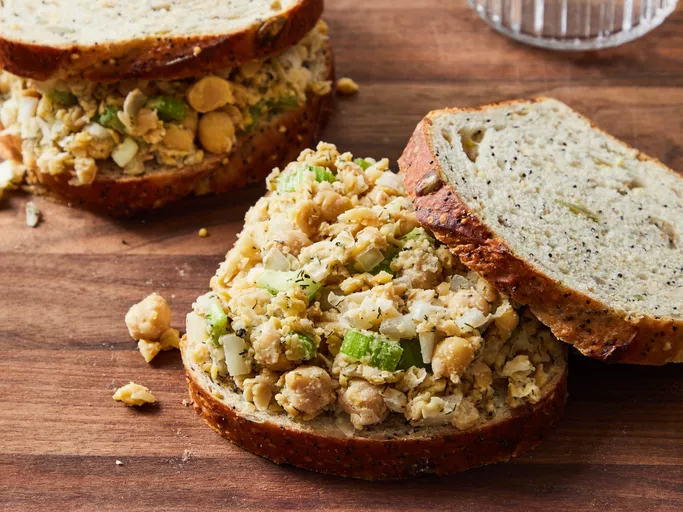

Introduction
Spread this chickpea sandwich filling on crusty whole
grain rolls or pita bread and serve with lettuce and
tomato. You can substitute any raw, chopped vegetable
for the celery. You can use your favorite salad dressing
instead of mayonnaise.
Ingredients
-
1 (15.5 ounce) can chickpeas,
drained and rinsed
- 1 celery stalk, chopped
- 1/2 onion, chopped
- 1 tablespoon mayonaise, or to taste
- 1 tablespoon lemon juice
- 1 teaspoon dried dill weed
- Salt and pepper to taste
Instructions
- Gather all ingredients.
- Mash chickpeas in a medium bowl with a fork.
-
Mix in celery, onion, mayonnaise, lemon juice, and
dill until well combined. Season with salt and
pepper.
- Serve on bread and enjoy!